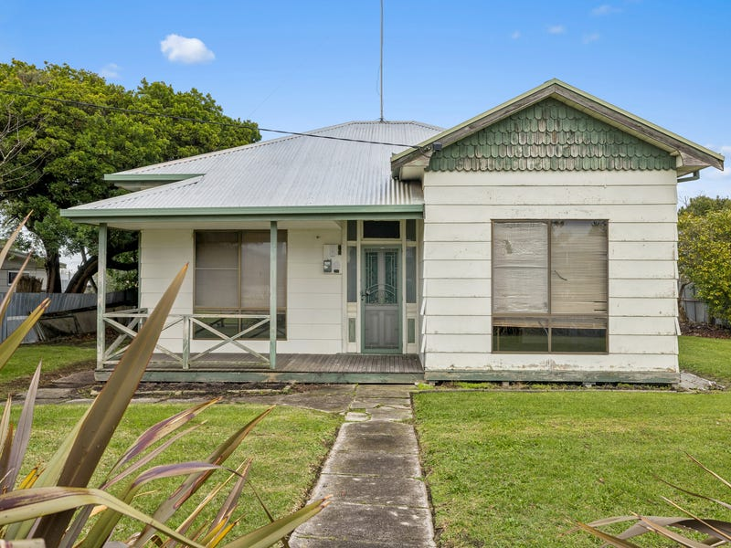
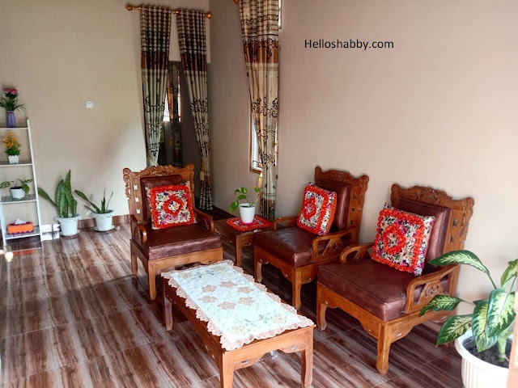
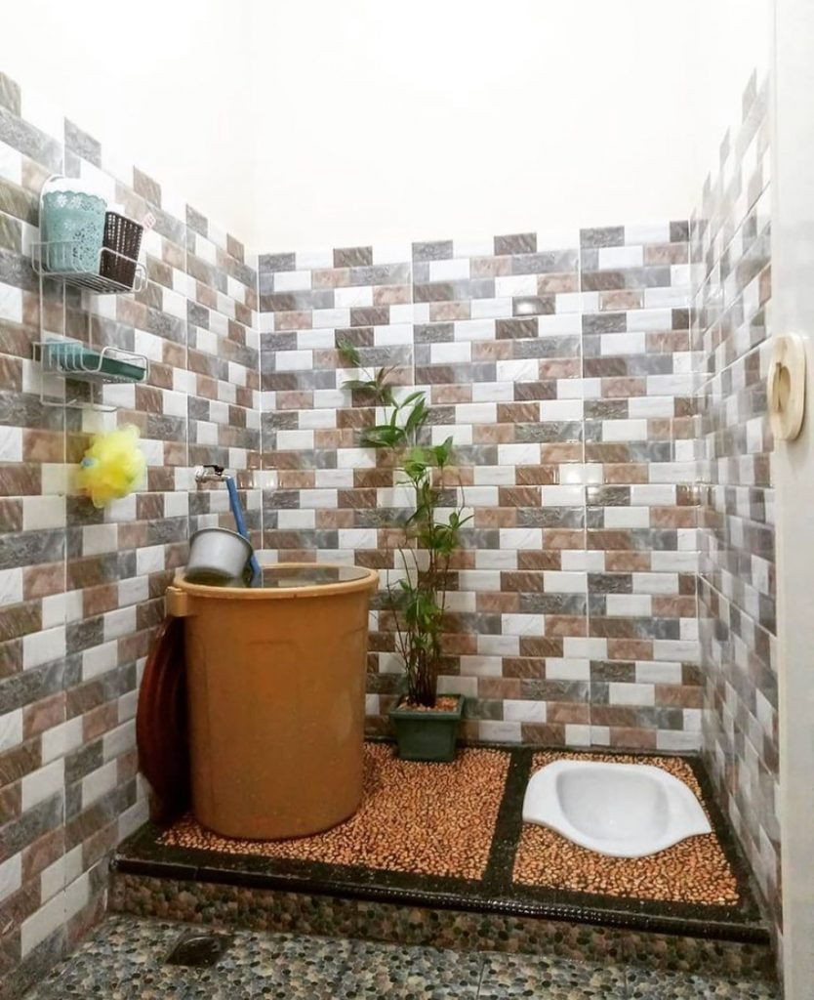

Persiapkan Data Perbaruan DTSEN
Kumpulkan dokumen dan jawaban berikut sebelum mengisi formulir pembaruan data. Dengan data yang sudah siap, pengisian bisa selesai dalam sekali duduk.
Siapkan dokumen dan informasi berikut
Ketika Anda ingin melakukan pembaruan data. Centang yang sudah siap.
Data yang harus disiapkan
Pertanyaan di formulir terbagi dalam empat kelompok. Buka tiap kelompok untuk melihat apa saja yang akan ditanyakan.
Pengeluaran bulanan dan mingguan boleh diisi dengan pengeluaran bulan atau minggu terakhir. Cek tiap catatan miring di bawah pertanyaan.
Identitas Keluarga
- Siapa nama Kepala Keluarga di Kartu Keluarga (KK) Anda?
- Berapa Nomor Induk Kependudukan (NIK) Kepala Keluarga Anda?
- Berapa Nomor Kartu Keluarga (KK) Anda?
- Berapa jumlah anggota keluarga Anda?
- Provinsi tempat tinggal keluarga saat ini
- Kabupaten/Kota tempat tinggal keluarga saat ini
- Kecamatan tempat tinggal keluarga saat ini
- Desa/Kelurahan tempat tinggal keluarga saat ini
- Kode Pos tempat tinggal saat ini
- Alamat Lengkap Rumah/Tempat Tinggal Anda?
- Nama Jalan Rumah/Tempat Tinggal Anda?
- Nomor Rumah/Tempat Tinggal Anda?
- Apakah alamat tempat tinggal saat ini sesuai dengan Kartu Keluarga?
- Titik lokasi (geotagging) tempat tinggal saat ini (Latitude, Longitude)
Keterangan Sosial Ekonomi Keluarga
- Apa jenis bangunan tempat tinggal yang Anda tempati? Rumah Tunggal | Apartemen | Rumah Susun | Rumah Deret | Lainnya. Bila memilih Lainnya, sebutkan jenis bangunannya.
- Selain keluarga Anda, apakah ada keluarga lain yang tinggal di rumah/tempat tinggal ini? (Ya/Tidak)
- Bila Ya: Berapa jumlah keluarga (selain keluarga Anda) yang tinggal dalam rumah/tempat tinggal ini?
- Bila Tidak: Berapa orang yang tinggal dalam 1 rumah/tempat tinggal Anda?
- Apa status kepemilikan bangunan tempat tinggal yang Anda tempati?
Milik Sendiri | Kontrak/Sewa | Bebas Sewa | Dinas | Lainnya. Bila memilih Lainnya, sebutkan status kepemilikannya.
- Bila Milik Sendiri: Apa bukti kepemilikan tanah bangunan tempat tinggal yang Anda tempati? SHM | Sertifikat selain SHM (SHGB, SHSRS) | Surat bukti lainnya (Girik, Letter C, dll) | Tidak Punya
- Berapa perkiraan harga sewa bangunan tempat tinggal Anda selama sebulan?
- Bila Kontrak/Sewa: Berapa harga kontrak/sewa bangunan tempat tinggal Anda selama sebulan?
- Bila Bebas Sewa atau Dinas: Berapa perkiraan harga sewa bangunan tempat tinggal Anda selama sebulan?
- Berapa luas lantai bangunan tempat tinggal Anda? Luas bangunan yang ditempati dan digunakan untuk keperluan sehari-hari (sebatas atap rumah)
- Apa jenis lantai terluas di tempat tinggal Anda?
- Apa jenis dinding terluas di tempat tinggal Anda?
- Bagaimana kondisi dinding di tempat tinggal Anda?
- Di tempat tinggal Anda, apakah memiliki fasilitas tempat buang air besar (BAB) dan siapa saja yang menggunakan?
- Apa jenis kloset yang digunakan di tempat tinggal Anda?
- Apa tempat pembuangan akhir tinja di tempat tinggal Anda?
- Apa sumber air minum utama di tempat tinggal Anda?
- Apa sumber penerangan utama di tempat tinggal Anda?
- Berapa jumlah meteran listrik yang terpasang di rumah Anda?
- Berapa daya pada meteran listrik ke-1 yang terpasang?
- ID Pelanggan PLN
- Berapa rata-rata pengeluaran listrik selama sebulan? Dapat menggunakan pengeluaran sebulan terakhir
- Berapa rata-rata pengeluaran pulsa untuk seluruh anggota keluarga selama sebulan? Dapat menggunakan pengeluaran sebulan terakhir
- Berapa rata-rata pengeluaran internet untuk seluruh anggota keluarga selama sebulan? Dapat menggunakan pengeluaran sebulan terakhir
- Berapa rata-rata pengeluaran makanan keluarga selama seminggu? Dapat menggunakan pengeluaran seminggu terakhir
- Berapa rata-rata pengeluaran bukan makanan rutin keluarga selama sebulan? Dapat menggunakan pengeluaran sebulan terakhir
- Berapa rata-rata pengeluaran bukan makanan rutin keluarga selama setahun?
- Total pendapatan seluruh anggota keluarga dari pekerjaan baik berupa uang maupun barang/jasa (Ada | Tidak Ada) Gaji, tunjangan, uang makan, honor, lembur, dll
- Total pendapatan seluruh anggota keluarga dari usaha, baik offline maupun online (Ada | Tidak Ada) Offline seperti warung, kosan, rentenir, dll. Online seperti affiliate, online shop, endorse, youtuber, dll
- Total pendapatan seluruh anggota keluarga dari penerimaan lain (Ada | Tidak Ada) Misalnya transfer, pemberian, passive income, pensiunan, kupon SBN, Obligasi, dll
- Foto Rumah
- Foto tampak depan rumah
- Foto ruang tamu tampak lantai dan dinding
- Foto kamar mandi
Kepemilikan Aset
- Kepemilikan tabung gas 3 kilogram
- Kepemilikan tabung gas 5 kilogram
- Kepemilikan lemari es
- Kepemilikan Air Conditioner (AC)
- Kepemilikan emas perhiasan
- Kepemilikan komputer/laptop/tablet
- Kepemilikan sepeda motor
- Total nilai aset sepeda motor
- Kepemilikan mobil
- Kepemilikan aset rumah selain yang saat ini sedang dihuni
- Kepemilikan aset lahan selain yang saat ini sedang dihuni
Keterangan Anggota Keluarga
- Nama
- Nomor Induk Kependudukan (NIK)
- Status keberadaan saat ini
- Tanggal Lahir
- Jenis Kelamin
- Status Hubungan dengan Kepala Keluarga
- Status Kawin
- Umur
- Partisipasi Sekolah
- Ijazah / STTB tertinggi yang dimiliki
- Profesi pekerjaan utama
- Apakah YBS menyandang Disabilitas Fisik?
- Apakah YBS menyandang Disabilitas Mental?
- Apakah YBS menyandang Disabilitas Intelektual?
- Apakah YBS menyandang Disabilitas Sensorik Netra?
- Apakah YBS menyandang Disabilitas Sensorik Rungu?
- Apakah YBS menyandang Disabilitas Sensorik Wicara?
- Apakah YBS memiliki keluhan kesehatan kronis/menahun?
Tidak ada pertanyaan yang cocok. Coba kata kunci lain.
Contoh foto rumah
Siapkan tiga foto berikut dalam bentuk file di ponsel atau komputer Anda, supaya bisa langsung diunggah saat mengisi formulir.



Foto di atas hanya contoh. Gunakan foto rumah Anda sendiri.
Unduh format surat keterangan
Format Surat Keterangan Kepala Desa/Lurah tersedia di situs formulir DTSEN. Bawa surat ini ke kantor desa atau kelurahan Anda.